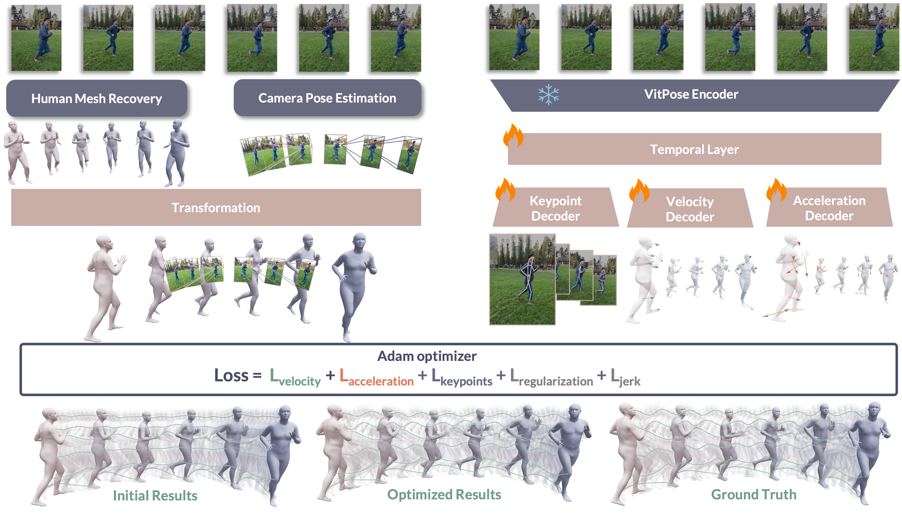

HTD-Refine:
Natural Human Motion Recovery
by Aligning High-order Temporal Dynamics
from Monocular Videos
TL;DR We refine existing HMR methods with estimated 3D velocity and 3D acceleration to recover natural human motion in global coordinates.
Abstract
Human motion recovered from monocular videos often appears overly smooth or dynamically inconsistent, even when joint positions are numerically accurate. We observe that this limitation stems from the absence of reliable high-order temporal cues, namely velocity and acceleration, which are essential for reconstructing motion with realistic momentum, timing, and high-frequency detail.
Methods
HTD-Refine recovers natural global human motion from a monocular video through three stages. First, we initialize a world-space trajectory by combining camera-space SMPL estimates from an off-the-shelf HMR model and per-frame camera extrinsics. Second, our lightweight temporal transformer, PVA-Net, predicts stabilized 2D keypoints together with camera-space 3D joint velocities and accelerations. Third, we optimize pose, global orientation, and translation over the full sequence with velocity and acceleration targets from PVA-Net, under constraints of 2D keypoints, jerk smoothness, and regularization toward the initialization.

Video Results
Main Results
MPJVE: Mean Per-Joint Velocity Error. MPJAE: Mean Per-Joint Acceleration Error.
EMDB-2 Moving Cameras
| Model | Jitter | FS | MPJVE | MPJAE | WA-MPJPE | W-MPJPE | RTE |
|---|---|---|---|---|---|---|---|
| TRAM (w/ traj filter) | 25.1 | 12.0 | 0.6 | 12.3 | 78.8 | 221.3 | 1.5 |
| TRAM + HTD-Refine | 6.6 | 7.5 | 0.4 | 8.0 | 71.7 | 204.9 | 1.5 |
| GVHMR | 17.2 | 4.0 | 0.6 | 10.4 | 118.7 | 292.7 | 2.1 |
| GVHMR + HTD-Refine | 7.2 | 5.7 | 0.4 | 7.9 | 69.2 | 192.4 | 1.5 |
| Human3R | 529.6 | 60.0 | 2.9 | 143.3 | 169.0 | 367.1 | 2.2 |
| Human3R + HTD-Refine | 132.5 | 23.2 | 1.3 | 39.4 | 156.2 | 391.4 | 2.2 |
RICH Static Cameras
| Model | Jitter | FS | MPJVE | MPJAE | WA-MPJPE | W-MPJPE | RTE |
|---|---|---|---|---|---|---|---|
| TRAM (w/ traj filter) | 18.7 | 12.9 | 0.6 | 8.7 | 103.6 | 168.4 | 2.7 |
| TRAM + HTD-Refine | 4.2 | 6.5 | 0.4 | 5.1 | 90.2 | 145.3 | 2.5 |
| GVHMR | 13.0 | 3.3 | 0.4 | 6.8 | 77.4 | 124.0 | 2.5 |
| GVHMR + HTD-Refine | 3.6 | 3.3 | 0.3 | 4.8 | 75.2 | 123.8 | 2.3 |
Citation
@inproceedings{wei2026htdrefine,
title = {Natural Human Motion Recovery by Aligning High-Order Temporal Dynamics from Monocular Videos},
author = {Wei, Dingkun and Shen, Zehong and Xia, Yan and Pavlakos, Georgios and Shen, Yujun and Zhou, Xiaowei},
booktitle = {Proceedings of the IEEE/CVF Conference on Computer Vision and Pattern Recognition (CVPR)},
year = {2026}
}